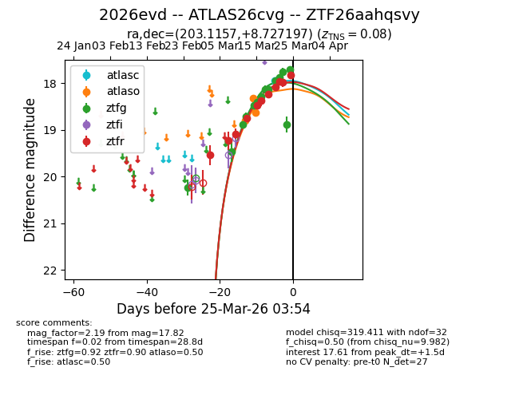
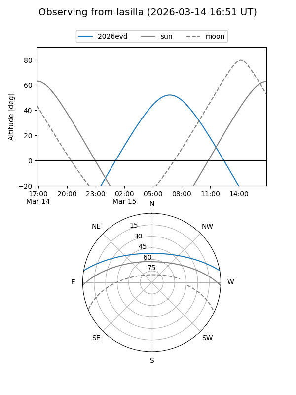
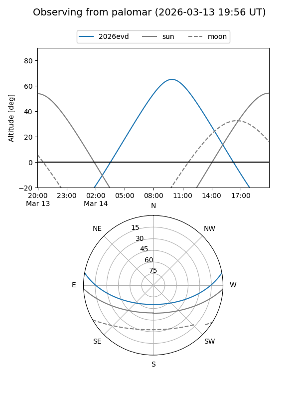
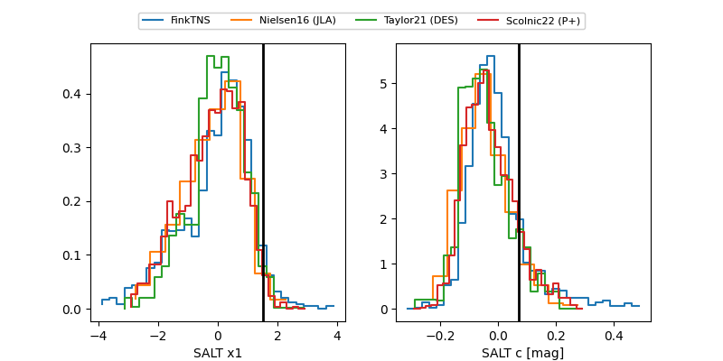

2026evd
Target 2026evd at 2026-03-25 03:57
Aliases and brokers:
FINK: link
Lasair: link
ALeRCE: link
TNS: link
YSE: link
alt names
ZTF26aahqsvy (ztf,fink_ztf)
2026evd (tns,yse)
ATLAS26cvg (atlas)
Coordinates:
equatorial (ra, dec) = 203.1157,+8.72720
equatorial (HMS+DMS) = 13:32:27.76,+08:43:37.91
galactic (l, b) = (332.6380,+69.19814)
Flags:
Photometry:
last atlasc=17.94, atlaso=18.63, ztfg=17.70, ztfr=17.82
1 atlasc, 3 atlaso, 14 ztfg, 11 ztfr detections
Lightcurve

Visibility


Additional plots
